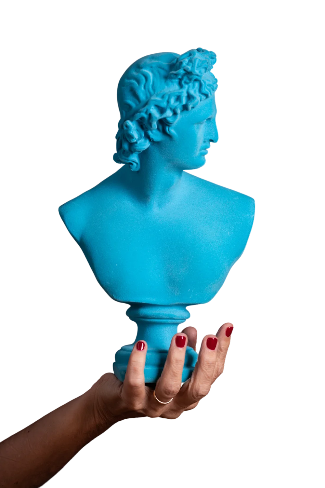
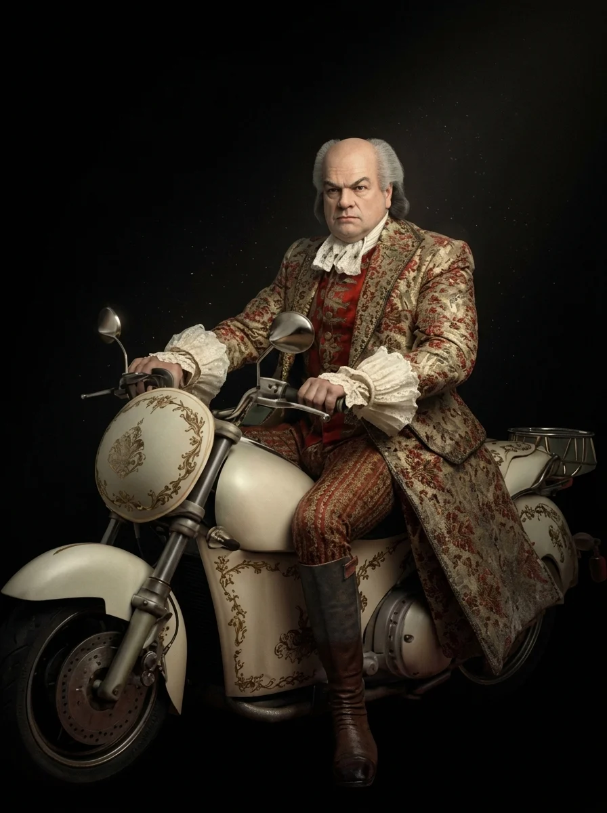
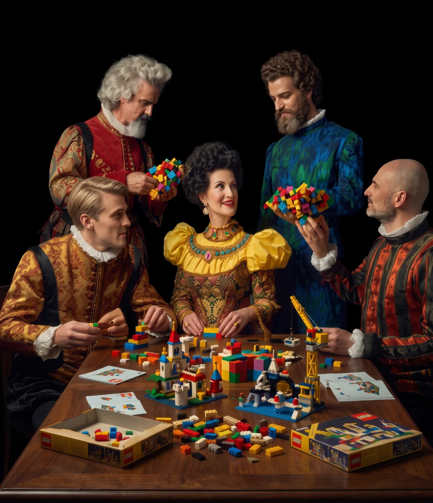

Leadership
Program

Qué es Senda
Imagina que las soluciones a tus desafíos organizacionales estuviesen diseñadas específicamente para ti.
Que combinasen disciplinas y metodologías transformadoras para impulsar aspectos estratégicos, creativos y relacionales de tu organización.
Soluciones capaces de generar un impacto tangible en tus resultados.
Esto es lo que hacemos en Senda.
Somos una consultoría especializada en el desarrollo de organizaciones y de sus equipos.
Qué nos define
No nos quedamos en la superficie. Escuchamos y, como expertos en leer entre líneas, conseguimos ofrecer al cliente un diagnóstico con el que se identifica, viendo sus necesidades estructuradas y comunicadas de manera óptima.
En Senda usamos la creatividad para diseñar y desarrollar soluciones adaptadas a los retos concretos de cada cliente. Disfrutamos utilizando técnicas transformadoras, con sentido común, para abrir puertas, explorar alternativas y crear posibilidades.
Metodologías
- LEGO® Serious Play®
- Design Thinking
- ORSC™ (Coaching Sistémico)
- Will·BE Method®
- Coaching x Valores
- Coaching de Equipos
- Bridge®
- Sikkhona®
- Lean Startup
- Agile Coaching
- Liberating Structures
Disciplinas
- Consultoría de Management
- Coaching Organizacional
- Coaching Directivo
- Facilitación
- Capacitación
- Mentoría
La nuestra es la ética del cuidado: contribuir al bien del cliente. Por eso construimos relaciones estrechas, honestas y generosas.
Leadership Program
Programa que, desde una perspectiva integral, tiene como objetivo capacitar a los directivos en las habilidades necesarias para optimizar su desempeño como mánagers. Es decir, en la gestión de personas y procesos.

Necesidad y sentido
Las empresas, a menudo, comparten la necesidad de capacitar a sus directivos para que dispongan de los conocimientos y competencias necesarios para afrontar sus retos en materia de management.
El perfil de estos profesionales suele ser el de personas muy comprometidas con la empresa, con una pericia demostrada a nivel técnico y una carrera ascendente dentro de la compañía, pero, a menudo, con poca formación en cuestiones relacionadas con la gestión, ya sea de personas y/o de procesos.
El sentido de nuestro Leadership Program es dotar de recursos y herramientas a estos profesionales, a la vez que ganan en seguridad y confianza, para así generar un mayor impacto en el negocio desde su área de responsabilidad.
A quién va dirigido
Directivos y mánagers…
Con un fuerte componente técnico para quienes el desempeño de sus funciones implique:
- La interacción con colaboradores, clientes y proveedores.
- La gestión y coordinación de equipos de trabajo.
- Que, por su posición en la empresa, tengan responsabilidades de gestión (sobre personas, recursos y procesos).
- Que formen parte de algún comité o grupo de trabajo.
Objetivos y beneficios
-
1
Incorporar una cultura del liderazgo en todos los niveles de la empresa.
-
2
Talento: desarrollar talento interno, afianzar y captar externo.
-
3
Promover la excelencia y accountability de los profesionales.
-
4
Desarrollar la capacidad de liderazgo y autogestión.
-
5
Incorporar recursos y competencias fundamentales para el día a día.
-
6
Impactar positivamente en la organización.
Learning by doing
100%
Experiencial
Tailor-
made
Diseño personalizado
Leadership Program: fases
Pulsa una fase para ver su contenido
Autoconocimiento y autoliderazgo
No hay liderazgo sin autoliderazgo.
- Autoconciencia: herramientas de reflexión y toma de perspectiva de uno mismo y su entorno.
- Autoconocimiento: qué me funciona y qué hago bien, qué me bloquea, qué me cuesta, qué me detona.
- Autogestión: gestión emocional en el entorno laboral.
- Reestructuración cognitiva: diálogo interno.
- Cuál es mi estilo relacional y saber detectar y gestionar los estilos relacionales de los otros.
- Identificar mis valores, lo que me mueve.
- Assessments Bridge® y Coaching x Valores.
Habilidades relacionales
Comunicar para conectar.
- Desarrollar habilidades comunicativas para la gestión de equipos.
- Potenciar la capacidad de coordinación con otros profesionales.
- Mejorar la capacidad de interacción con clientes y proveedores.
- Dominar las habilidades conversacionales esenciales.
- Generar relaciones de cooperación y confianza: mejorar la conexión con los colaboradores en los proyectos en los que participen.
- Escucha empática.
- Asertividad: hacer peticiones y poner límites desde el respeto hacia uno mismo y con respeto hacia los otros.
- Dar y recibir feedback.
- Negociación, persuasión e influencia.
Gestión de equipos
Equipos alineados, empoderados, proactivos y comprometidos.
- Entender el equipo como sistema.
- Cohesión y comunicación dentro del equipo.
- Alineamiento y compromiso con los objetivos comunes.
- Gestión del conflicto.
- Habilidades para el liderazgo transversal y la gestión de equipos de proyectos.
- Empoderamiento del equipo: gestionar, motivar y coordinar equipos de trabajo.
- Equipos de Alto Rendimiento: qué son y cómo acompañar a mi equipo en el camino hacia la excelencia.
Toma de decisiones y gestión del cambio
Parar, pensar y tomar altura para decidir.
- Desarrollo del pensamiento crítico para la toma de decisiones.
- Estructura y método: toma de decisiones en entornos BANI.
- Evaluación del impacto de las decisiones.
- El rol del equipo en la implementación.
- Cómo promover un cambio de mindset en el equipo.
- Pasar del problema al reto.
- Liderazgo en procesos de cambio y transformación.
- Gestión de la resistencia al cambio.
Organización y efectividad
Estructura y método para ser eficiente y mejorar resultados.
- Tipo de reunión en función del objetivo.
- Los básicos: convocatoria, orden del día y asistentes.
- Reuniones efectivas: diseño, planificación y desarrollo.
- Reuniones online eficientes.
- Elaboración de un acta útil.
- Cómo llegar a objetivos SMART.
- Planes de acción: concreción y accountability.
- Gestión del tiempo: calendarización, priorización y detección de los ladrones del tiempo.
- Eliminar la procrastinación.
Metodología

Metodología
Entendemos que el verdadero impacto transformador de una formación solo se produce por la experiencia. Por eso, el programa está diseñado para que los participantes experimenten e integren herramientas y recursos a través de la práctica, la interacción y el intercambio.
Utilizamos metodologías innovadoras y combinamos diferentes disciplinas (técnicas de aprendizaje, mentoring, consultoría y coaching).
Método del caso: tomamos como referencia la realidad cotidiana de los participantes. Los asistentes trabajan en supuestos reales conectados con su día a día.
Utilizamos LEGO® Serious Play®, assessments de Bridge®, Design Thinking, Agile, Coaching x Valores y Coaching Sistémico para dinamizar y aportar valor.
100%
- Innovador
- Experiencial
- Transformador
- Participativo
Equipo
-
Cristina Berenguer
linkedin.com/in/cristinaberenguer -
Gerard Gual
linkedin.com/in/gerardgual -
Irene Lara
linkedin.com/in/irenelaracasteras -
Jordi Escartin
linkedin.com/in/jordiescartin
¿Hablamos?
senda.site info@senda.site cberenguer@senda.site